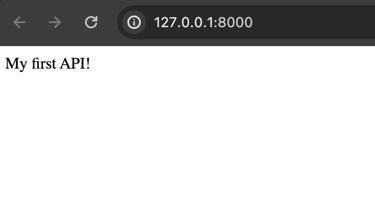
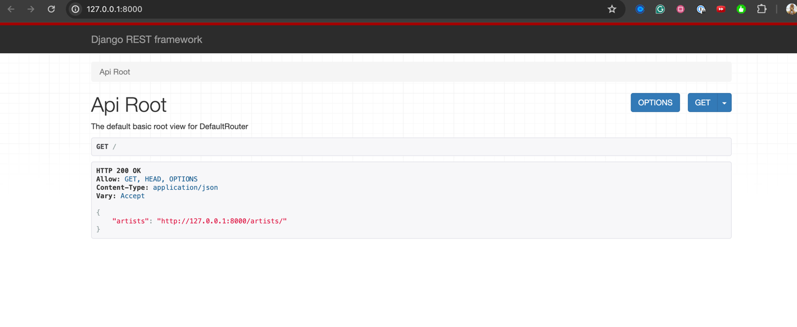
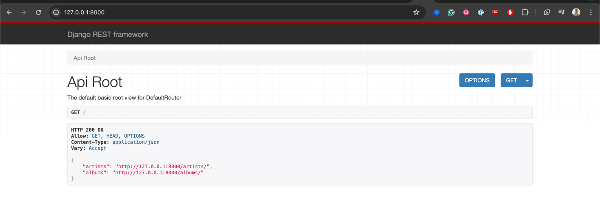
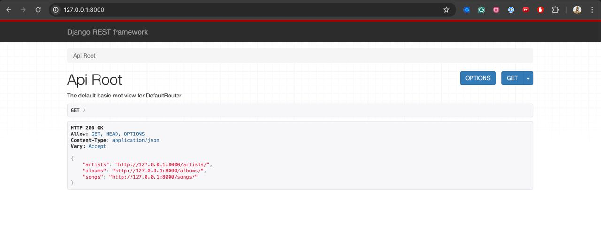

Home
~~# 🌐 Building Your First API with Django and Django Rest Framework
Summary
The goal of this tutorial is for you to have Music API ready to receive songs, albums, and artists. While you learn Django and Django Rest Framework a.k.a DRF to build you first API
Requirements list:
- Python 3
-
Git
-
Total Duration: 3 hours 30 minutes
- Lecture: 1 hour (approximately 30%)
- Exercises: 2 hours 30 minutes (approximately 70%)
Introduction and Overview
Django
To start, we first need to understand what Django is. Django is the most popular web framework in the Python ecosystem, characterized by its high-level structure that encourages rapid development and clean, pragmatic design. It has been constructed by experienced developers and aims to mitigate the hassles of web development; this allows developers to focus their attention on writing their app without feeling the need to reinvent the wheel. Django is a free and open-source framework that is ingrained in the model-template-views architectural pattern. Its maintenance is overseen by the Django Software Foundation, an independent, non-profit organization based in the United States.
Django Rest Framework
The Django Rest Framework is a powerful library constructed on top of Django, with a unique interlinking to the Django Model. This relationship endows Django with the enhanced ability to create APIs(application programming interfaces).
An important thing to know about Django is how the information usually flows
sequenceDiagram
participant B as Browser
participant DS as Django Server
participant UP as URL Patterns
participant V as View
B->>DS: Sends HTTP request
DS->>UP: Matches HTTP request to URL patterns
UP->>V: Calls appropriate View with request object
V-->>UP: Response object
UP-->>DS: Returns HTTP response
DS-->>B: JSON response(in our case)The sequence diagram illustrates the flow of an HTTP request through the Django web framework. Let's break it down step by step:
-
Browser Sends HTTP Request: The process begins when the user interacts with the browser, triggering an HTTP request. This request is sent to the Django server.
-
Django Server Receives Request: Upon receiving the request, the Django server forwards it to the URL dispatcher (URL Patterns) to determine which view function should handle it.
-
URL Patterns Match Request to View: The URL dispatcher matches the incoming HTTP request to the appropriate view function based on the URL patterns defined in the Django project. It then calls the corresponding view function, passing along the request object.
-
View Processes Request: The view function performs the necessary processing based on the request received. This could involve querying the database, performing business logic, or any other required tasks. Once the processing is complete, the view returns a response object.
-
Response Travels Back: The response object generated by the view function travels back through the same path it came from, starting with the URL dispatcher. The response is passed back to the Django server.
-
HTTP Response Returned: The Django server sends the HTTP response, typically in the form of JSON data in your case, back to the browser, fulfilling the original request.
This sequence outlines the typical flow of a request-response cycle in Django, demonstrating how requests are handled and responses are generated within the framework.
Set up the project
Now we have a basic understanding of Django and DRF. We are going to set up the project.
Clone the repository:
git clone git@github.com:lipemorais/building-your-first-api-with-django-and-django-rest-framework.git
This will clone the repository
Creating the music Django App
Now we are going to create the Django we are going to use in this tutorial.
The current project structure is something similar to this below:
❯ tree .
.
├── first_api
│ ├── __init__.py
│ ├── asgi.py
│ ├── settings.py
│ ├── urls.py
│ └── wsgi.py
├── manage.py
└── music
├── __init__.py
├── admin.py
├── apps.py
├── migrations
│ └── __init__.py
├── models.py
├── tests.py
└── views.py
Don't forget to check the app music to your INSTALLED_APPS in your settings.py
# first_api/settings.py
...
INSTALLED_APPS = [
"django.contrib.admin",
"django.contrib.auth",
"django.contrib.contenttypes",
"django.contrib.sessions",
"django.contrib.messages",
"django.contrib.staticfiles",
"rest_framework",
"music",
]
...
Django Models
Now the next step is create the models we are going to use in our API to represent the domain models.
We are going to create 3 models in the file models.py
- Artist
- Album
- Song
Let's start with the artist model.
# music/models.py
class Artist(models.Model):
name = models.CharField(max_length=100)
def __str__(self):
return self.name
Don't forget to import the models
Now the album model# music/models.py
class Album(models.Model):
title = models.CharField(max_length=100)
artist = models.ForeignKey(Artist, on_delete=models.CASCADE)
release_year = models.IntegerField()
def __str__(self):
return self.title
The last model will be the song model that will have relationship with artist and album.
# music/models.py
class Song(models.Model):
author = models.CharField(max_length=100)
title = models.CharField(max_length=100)
artist = models.ForeignKey(Artist, on_delete=models.CASCADE) # Artist or band name
album = models.ForeignKey(Album, on_delete=models.CASCADE) # Album the song belongs to
duration = models.IntegerField() # Duration of the song in seconds
URL Mapping and Views
Now let's go to the URL Mapping, we need to associate the url with the handler functions that are called as view in Django. To create a simple endpoint that works.
# first_api/urls.py
from django.contrib import admin
from django.urls import path, include
urlpatterns = [
path("admin/", admin.site.urls),
path("", include('music.urls')),
]
You need to create a file urls.py inside music folder and make it look like the example below.
# music/urls.py
from django.urls import path
from . import views
urlpatterns = [
path('', views.index, name='index')
]
And last but not least you need to create this you need to create the view. A function view in this case.
# music/views.py
from django.http import HttpResponse
def index(_request):
return HttpResponse("My first API!")
So no you can use the command task r to start our django server, so you can access http://127.0.0.1:8000/ to see it.

Until here we just looked at Django stuff. Now we will dive into Django Rest Framework(DRF) stuff.
Serializers
From now on we will dive into DRF specific work. The concept I want to present you is the Serializer. That is responsible for parse the data received(usually through a HTTP request, since we are creating an API) into python native types, and sometime into our Django models.
Serializers are deeply inspired into Django Forms and Django Model Forms
So now we will use our Artist model to create our first endpoint.
You need to create a file called serializers.py with creating the serializer for the Artist Model.
from rest_framework import serializers
from music.models import Artist
class ArtistSerializer(serializers.HyperlinkedModelSerializer):
class Meta:
model = Artist
fields = ['name']
ArtistSerializer inheriting from serializers.HyperlinkedModelSerializers. It will do a few things.
1. Create a Serializer based on the Artist Model based on the model field in the Meta class.
2. Create hyperlinks for the relationships
4. We need to pass explicitly the fields from the Artist model that will be in the serializer at the fields in the Meta class.
With the serializer in place we need more 2 steps, the url mapping and the view.
Let's do both in sequence, first the view. For the view we are going to use a ModelViewSet. Inside our file music.views.py we need to add this snipper.
# music/views.py
...
class ArtistViewSet(viewsets.ModelViewSet):
queryset = Artist.objects.all()
serializer_class = ArtistSerializer
ModelViewSet.
2. queryset parameter tells DRF what do list, this will be shared across all the views
3. serializer_class is self-explanatory
Don't forget to add the imports at the beggining of the file.
from rest_framework import viewsets
from music.models import Artist
from music.serializers import ArtistSerializer
Building an API - Part I
Ok, now we just need to map our ArtistViewSet to a URL. In our music.urls.py we are going to use one more resource that DRF provides us, the Default Router. It will create a set of common routes for our ViewSet.
This will be the code:
# music/urls.py
from django.urls import path, include
from rest_framework import routers
from . import views
from .views import ArtistViewSet
router = routers.DefaultRouter()
router.register(r'artists', ArtistViewSet)
urlpatterns = [
path('', include(router.urls)),
# path('', views.index, name='index'),
]
Now to see it all working together we need to create the migrations for our models with the following steps.
Now access http://127.0.0.1:8000/ to see your API working. 🥳
Congratulations now you have your first api working.

Lunch/Break
- ⏳ Time for rest and informal discussions.
Building an API - Part II
Now that you've explored some of the shortcuts provided by DRF, let's delve into creating an endpoint for the album model using a plain Serializer, without relying heavily on shortcuts.
Let's start by the urls part. We gonna need to add the new route to our music.urls.py. Now it should look like this.
from django.urls import path, include
from rest_framework import routers
from . import views
from .views import ArtistViewSet, AlbumViewSet
router = routers.DefaultRouter()
router.register(r'artists', ArtistViewSet)
router.register(r'albums', AlbumViewSet)
urlpatterns = [
path('', include(router.urls)),
# path('', views.index, name='index'),
]
Next is the AlbumViewSet in the music.views.py. I will break it down in some steps.
class AlbumViewSet(viewsets.ViewSet):
queryset = Album.objects.all()
serializer_class = AlbumSerializer
AlbumViewSet inheriting from views.ViewSet, pay attention, this is nos a model view set.
2. Set the queryset
3. Set serializer_class, we are going to talk about this AlbumSerializer later
After this still in the same view we are going through what DRF call actions. Instead of have methods in the view set for get, post, delete... It has functions based on actions. The actions are the ones below:
class AlbumViewSet(viewsets.ViewSet):
queryset = Album.objects.all()
serializer_class = AlbumSerializer
def list(self, request):
"""
List the resources, albums in this case
"""
pass
def create(self, request):
"""
List the resources, albums in this case
"""
pass
def retrieve(self, request, pk=None):
"""
Retrieve a single resources, album in this case
"""
pass
def update(self, request, pk=None):
"""
Update the resource, album in this case
"""
pass
def partial_update(self, request, pk=None):
"""
Partially update the resource, album in this case
"""
pass
def destroy(self, request, pk=None):
"""
Delete the resource, album in this case
"""
pass
With the actions in place we will fill each of these methods.
First the list method.
def list(self, request):
serializer = self.serializer_class(self.queryset, many=True)
return Response(serializer.data)
from rest_framework.response import Response
The following action will be create
def create(self, request):
serializer = self.serializer_class(data=request.data)
serializer.is_valid(raise_exception=True)
serializer.save()
return Response(serializer.data, status=status.HTTP_201_CREATED)
request.data
2. Check if it is_valid
3. Save our Album(There is caveat here I will show later how to fix)
4. And return a response with the serializer.dataa and a https status
5. Don't forget to import from rest_framework import status
Next is retrieve
def retrieve(self, request, pk=None):
album = get_object_or_404(Album, pk=pk)
serializer = self.serializer_class(album)
return Response(serializer.data)
get_object_or_404 from from rest_framework.generics import get_object_or_404
2. serialize it and send it back as a response
So we have the update
def update(self, request, pk=None):
album = get_object_or_404(Album, pk=pk)
serializer = self.serializer_class(album, data=request.data)
serializer.is_valid(raise_exception=True)
serializer.save()
return Response(serializer.data)
For partial_update is close to the one above
def partial_update(self, request, pk=None):
album = get_object_or_404(Album, pk=pk)
serializer = self.serializer_class(album, data=request.data, partial=True)
serializer.is_valid(raise_exception=True)
serializer.save()
return Response(serializer.data)
update above is the partial=True so it know that it just need to update some fields not all of them.
Last but not least destroy action to delete albums
def destroy(self, request, pk=None):
album = get_object_or_404(Album, pk=pk)
album.delete()
return Response(status=status.HTTP_204_NO_CONTENT)
.delete() on it
With destroy set the we finish the change on music.views.py
Now we go for our AlbumSerializer
class AlbumSerializer(serializers.Serializer):
title = serializers.CharField()
artist = ArtistSerializer() # Serializers inherits from Field, so it can be used as fields too
release_year = serializers.IntegerField()
class Meta:
fields = ['title', 'artist', 'release_year']
- First we define our
AlbumSerializerinheriting fromserializers.Serializer - With the fields
title,artist,release_yearwith it respective fields - We also need to list the fields inside the class Meta
Additionally, we need to add 2 methods to let DRF know how to save and how to update the Albums.
The first is create
def create(self, validated_data):
artist_data = validated_data.pop('artist')
artist, created = Artist.objects.get_or_create(name=artist_data['name'])
return Album.objects.create(artist=artist, **validated_data)
Album model here with from music.models import Album
and the update method
def update(self, album, validated_data):
artist_data = validated_data.pop('artist')
artist, created = Artist.objects.get_or_create(name=artist_data['name'])
album.title = validated_data.get('title', album.title)
album.release_year = validated_data.get('release_year', album.release_year)
album.artist = artist
album.save()
return album
Artist model, creating/getting it before save the Album
2. So we get the new fields and save it
3. Last we return the updated album
With everything set we can see it working live.
Now we have 2 resources here, artists and albums

I hope that at this time you understand the amount of shortcuts DRF gives you at the same time, if you want to customize it, it's still possible.
Building an API - Part III
Easy version
We are going to start from the urls one more time. We will add the route for the songs in our music.urls like in the snippet below
from django.urls import path, include
from rest_framework import routers
from .views import ArtistViewSet, AlbumViewSet, SongViewSet
router = routers.DefaultRouter()
router.register(r'artists', ArtistViewSet)
router.register(r'albums', AlbumViewSet)
# Add this new line below
router.register(r'songs', SongViewSet)
urlpatterns = [
path('', include(router.urls)),
# path('', views.index, name='index'),
]
SongViewSet in our music.views file using a ModelViewSet like in the snippet below. Also update Don't forget to add the import for the SongSerializer in your imports
from music.serializers import ArtistSerializer, AlbumSerializer, SongSerializer
class SongViewSet(viewsets.ModelViewSet):
queryset = Song.objects.all()
serializer_class = SongSerializer
At this point the SongSerializer doesn't exist yet, so now we are going to create it. Here also update the imports for the models including the Song model. Here there is a snippet so you see the changes you have to do on you music.serializers file.
from music.models import Artist, Album, Song
class SongSerializer(serializers.HyperlinkedModelSerializer):
class Meta:
model = Song
fields = ['author', 'title', 'artist', 'album', 'duration']
With this part done you will be able to run you application and see something like this on you api with all 3 resource working in your API, Artist, Album and Song. 🥳

Now you api is complete! Congratulations! 🍾🎉🎊
Bonus content
Serializers deep dive
Types
Serializer fields
Serializer relations
Validators
Routers
ViewSets
The Browsable API
Q&A and Wrap-Up
- 🎬 Lecture: Recap of the day's lessons, addressing questions.
- 💡 Purpose: Ensuring clarity and concluding the session.